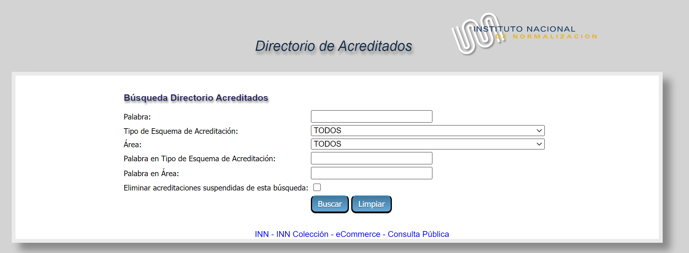
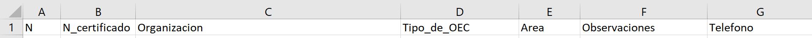

Hace ya casi 1 año publiqué un post acerca de cuántos laboratorios de ensayo hay acreditados existen en Chile el 2021. La publicación generó airadas reacciones, sin embargo, se abrió un interesante debate (esa es la idea).
Es tiempo de actualizar ese análisis versión 2022. En esta oportunidad llevaremos a cabo el
análisis paso a paso en R bajo el concepto de Reproducible Research
Nota: Considerar que algunas razones sociales podrían tener varios laboratorios/alcances
acreditados, por lo tanto, este gráfico en realidad cuenta el número de acreditaciones.
(¿Clickbait?)
La versión de este post es semi-automática, es decir, algunas operaciones serán
hechas a mano. Podríamos aplicar web scraping y bajar los datos directamente desde la página web del INN, pero eso qudará para otro post (lo intuye bien querid@ lector@… cuando yo aprenda a hacerlo.)
¿Dónde están los datos de laboratorios acreditados por el INN?
Bueno, lo primero es dirigirnos al siguiente link para bajar los datos desde la
página del INN (datos públicos por si acaso):
Directorio de Acreditados

En el campo Tipo de ESquema de Acreditación seleccionamos **Laboratorios de ensayo*:

Presionamos Buscar y obtenderemos el listado completo (incluyendo los laboratorios suspendidos):

Lamentablemente el sitio no tiene ninguna opción de bajar los datos en Excel u
otro formato, así que tendremos que hacerlo a la antigua:
- Botón derecho y se abrirá el siguiente menú:
- Elija Guardar Como y en tipo seleccione Página web (completa) y guárdelo
con el nombre acreditados.html (el nombre da igual)
Listo, hemos bajado los datos y ahora debemos limpiarlos pues incluso se
descargaron los íconos de los certificado en pdf. Tenemos que dejar la tabla
limpia para el análisis en R (o para cualquier otro software)
Limpieza de la base de datos en Excel
Haremos la limpieza de datos en Excel.
- Abra Excel
- Ahora abra el archivo archivados.html que guardó (sí, Excel puede abrir este tipo de archivos) y obtendrá algo similar a esto:

El objetivo es llegar a una hoja de Excel plana:

- Seleccionemos todos los datos inlcuyendo los encabezados de las columnas
(N, N Certi, etc), copiar y pegar en una nueva hoja sólo como datos, es decir,
nos ubicamos en la celda A1 de la hoja nueva, presionamos botón derecho y seleccionamos
Valores (V):

Y obtendremos lo siguiente:

- Eliminamos la columna B:

- Hemos obtenido la tabla que buscábamos:

- Lo único que nos falta es modificar un poco los encabezados para eliminar
acentos, espacios en blanco, etc. Para que Ud. pueda reproducir este análisis
cambie los encabezados por los siguientes:

- ¡Listo! hemos limpiado la base de datos, la cual debe lucir más o menos así
en el Excel:

- Cambiemos el nombre la hoja a
datos:

- Por último guardar el libro Excel con el nombre
acreditados.xlsx
Análisis estadístico en R
Abrimos el software RStudio y generamos un nuevo script:

Guardamos el script con el nombre acreditados.R en el mismo directorio
que guardamos la base de datos limpia acreditados.xlsx
Los siguientes comandos importan la base de datos del INN desde el Excel hasta R:
library(readxl)
acreditados <- read_excel('acreditados.xlsx', sheet = 'datos')
La importación ha sido exitosa si bserva la siguiente tabla con el comando head()
head(acreditados)
# A tibble: 6 × 7
N N_certificado Organizacion Tipo_de_OEC Area Observaciones Telefono
<dbl> <chr> <chr> <chr> <chr> <chr> <chr>
1 1 LE 633 Universidad Aust… Laboratori… Bioe… <NA> (56 65)…
2 2 LE 800 Universidad de C… Laboratori… Bioe… <NA> (56) 22…
3 3 LE 893 Universidad de C… Laboratori… Bioe… <NA> (56 65)…
4 4 LE 1287 Secretaria Regio… Laboratori… Bioe… <NA> (56 61)…
5 5 LE 1450 TAAG Genetics S.… Laboratori… Biol… <NA> (56) 22…
6 6 LE 1279 Universidad de L… Laboratori… Bioq… <NA> (56 64)…
Ahora haremos el gráfico de barras el cual indica el número de laboratorios de
ensayo acreditados por el INN al 29 de agosto de 2022 clasificados por Area.
Por una cuestión de espacios sólo se muestran aquellas areas con más de 10 laboratorios
acreditados:
library(ggplot2)
library(tidyverse)
library(magrittr)
tabla <- acreditados %>%
group_by(Area) %>%
summarise(n = n())
ggplot(tabla %>% filter(n >= 10), aes(x = reorder(Area, n), y = n, label = n)) +
geom_bar(stat = "identity", fill = 'blue', alpha = 0.7) +
ylab('N° de laboratorios de ensayo') +
xlab('Área') +
labs(title = "Laboratorios de Ensayos acreditados en Chile bajo ISO 17025 por área N = 804",
subtitle = "Incluye 37 suspendidos. Sólo se muestran n > 10",
caption = "Fuente: https://acreditacion.innonline.cl/") +
theme_bw() +
geom_text(size=5,hjust=1.5, col = 'white') +
coord_flip()

Para conocer el número total de laboratorios de ensayos acreditados por el INN
use los siguientes comandos:
acreditados %>%
summarise(n = n())
# A tibble: 1 × 1
n
<int>
1 804
El siguiente paso podría ser desagregar por Organización de tal manera de
diferencias las distintas razones sociales ¿Le parece estimad@ lector@?
Saludos